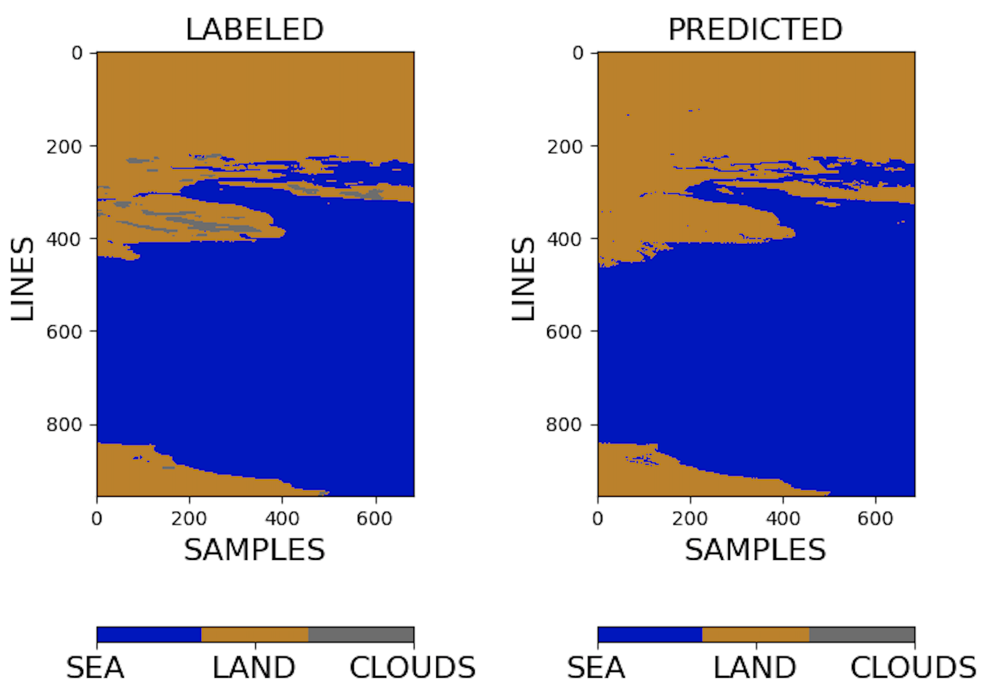

Performance Evaluation of the 1D FCN Model
Our adapted 1D FCN model applied to the HYPSO-1 Sea-Land-Cloud-Labeled Dataset achieves substantially high scores: 0.95 for overall accuracy, 0.91 for average accuracy, and 0.92 for kappa. These results highlight the superior performance of our network configuration for our dataset compared to the existing literature. In the paper we present how the model performs for an image in the Stuary of Ría de Arousa in Galicia (Spain), from the test set. On this page, we display additional results in the following table for the remaining captures in the test set. The table shows that the clouds category exhibits a lower hit rate accuracy compared to the sea and land classes. This can be attributed to the dataset's slightly skewed distribution, with clouds and overexposed pixels constituting a minority class, alongside other factors influencing these results such as the training process of the network.
| RGB | Labeled & Predicted | Confusion Matrix | Image ID, country and date |
|---|---|---|---|
| 39 Qatar on 13th December 2022 |
|||
 |

|
58 Argentina on 05th December 2022 |
|
| 59 Spain on 05th December 2022 |
|||
 |
 | 150 Iran on 26th September 2022 |
|
 |

|
207 China on 08th August 2022 |